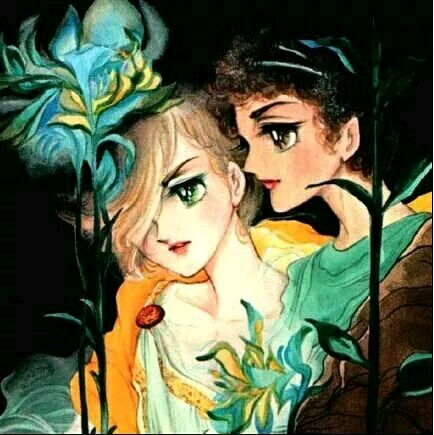

风与木之诗

交配类型：BL
《风与木之诗》（日语：風と木の詩，英语：Kaze to Ki no Uta）是日本漫画家竹宫惠子的一部漫画作品，该作品最早于1976年在小学馆旗下杂志《周刊少女Comic》10月号开始连载。从1982年7月，《风与木之诗》移刊到小学馆旗下的另外一本漫画期刊《Petit Flower》上连载；并于1984年6月完结。《风与木之诗》总共分为两部。
1979年，《风与木之诗》获得第25届小学馆漫画赏少年少女类优秀漫画奖。
剧情简介
这个令人心碎的故事围绕法国Laconblade寄宿学院中的两位室友的关系展开。1887年，其中名叫塞尔吉·巴图勒的那位，在毕业好几年后返回Laconblade学院。塞尔吉现在是21岁，他这次回来是为了悼念他那位已经死去的室友和伴侣——吉尔伯特·柯克图。当塞尔吉走进他们曾经同住的那间屋子时，有关那位美丽如天使般的吉尔伯特的回忆顿时萦绕在了他的周围，随后，他们之间那段忧郁、浪漫的故事便以闪回的手法逐渐被展开了。
推荐理由
暂无